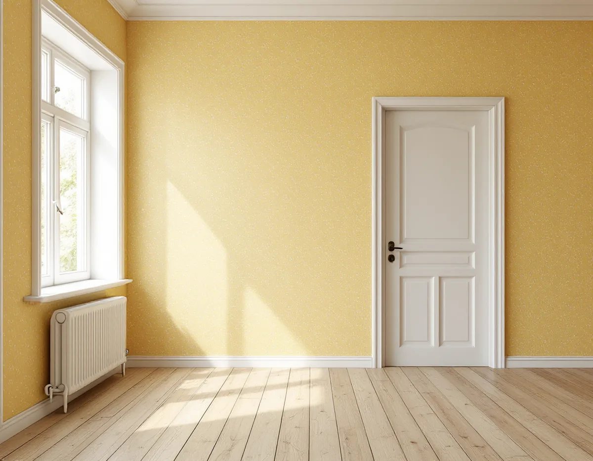
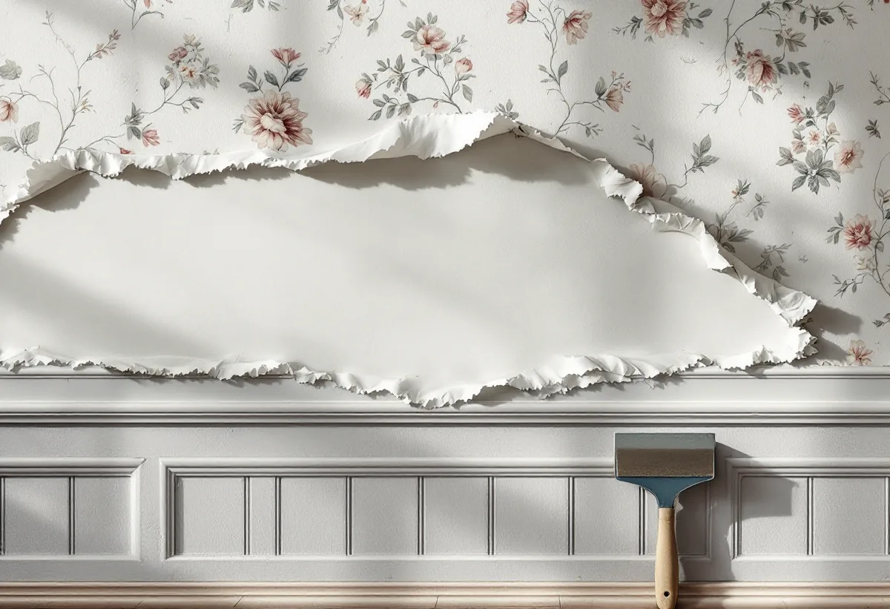
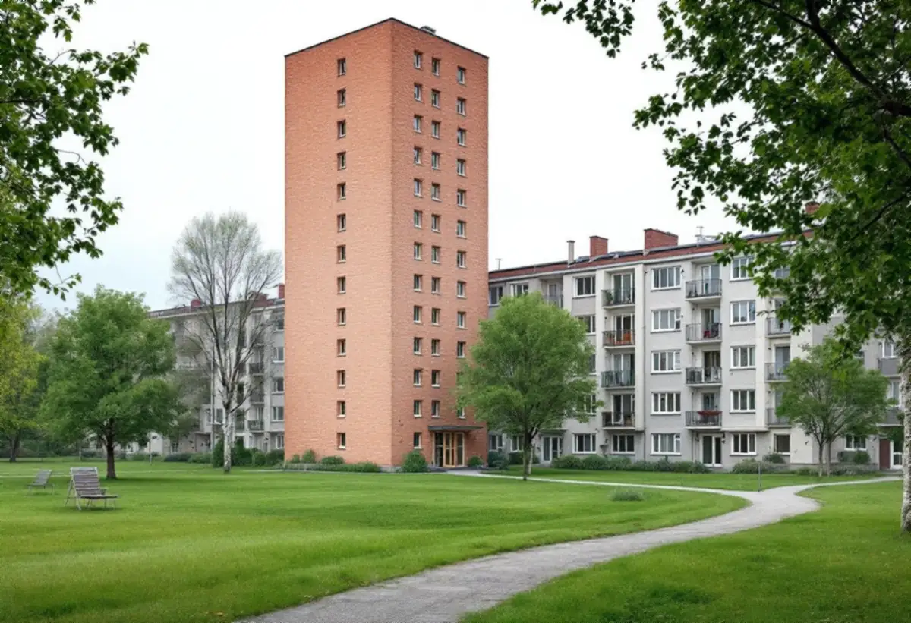

Platsbesök
Gratis besök, prov av väggen under tapeten.
Vällingby byggdes under 1950-talet, just när väggarna i nya hus började behandlas på ett annat sätt. Därför kan två lägenheter i samma stadsdel kräva helt olika underarbete. Geal Entreprenad AB tapetserar i lägenheter, radhus och kedjehus i Vällingby, Råcksta och Grimsta och provar väggen innan tapeten sätts upp.

Översiktsplanens riksintressedel beskriver Vällingby–Råcksta som landets första ABC-stad, utbyggd under 1950-talet och ett sammanhållet uttryck för det årtiondet. Byggnadsvårdsföreningen skriver att dålig vidhäftning kan befaras i hus från 1920–1950-talen, då väggarna underbehandlades med lim och krita, så kallad kridering, och att sandspackel började användas som underlag vid mitten av 1950-talet.
Stadens vägledning Varsam utveckling av småhus- och villaområden berättar att Vällingby invigdes 1954 och lyfter fram radhusområdena Atlantis och Omega som kulturhistoriskt synnerligen värdefulla. Ett hus från början av årtiondet kan alltså ha krita under tapeten, medan ett hus från slutet har sandspackel. Vi tar ner en bit av den gamla tapeten och provar ytan innan vi föreslår underarbete. Släpper väggen behöver den förbehandlas, annars kan den nya tapeten lossna.

Stadens områdesfakta för 2025 räknar 2 076 bostadsrätter i Vällingby, 1 498 lägenheter i allmännyttan och 597 hos privata hyresvärdar, och 220 småhus med äganderätt. I Råcksta finns 1 551 bostadsrätter och över 3 000 hyresrätter, och i Grimsta är 1 525 av 2 338 bostäder allmännyttiga.
Hyresgäster har enligt jordabalken rätt att tapetsera på egen bekostnad, men hyresvärden kan kräva ersättning om lägenhetens bruksvärde minskar. I en bostadsrätt är det stadgarna som avgör vem som ansvarar för väggarnas ytskikt. I småhusen med äganderätt bestämmer du själv, och där kan arbetet omfatta hela huset.
Bostadsrättslagen säger att det för en lägenhet med särskilda historiska, kulturhistoriska, miljömässiga eller konstnärliga värden krävs styrelsens tillstånd för varje åtgärd som påverkar ett sådant värde. Riksintressedelen för Vällingby–Råcksta räknar upp detaljer på husens utsida, men en lägenhet kan ha till exempel en bevarad tapet eller fast inredning som föreningen vill behålla.
Finns en äldre tapet kvar som kan vara värdefull frågar vi föreningen innan den tas ner. Ibland går det att låta den sitta kvar under den nya, eftersom Byggnadsvårdsföreningen skriver att det oftast går bra att tapetsera på gamla tapeter. Bronstryck kan dock slå igenom, och då grundas väggen med alkydfärg eller shellack.
Byggnadsvårdsföreningen påpekar att vassa korn och toppar från dålig slipning eller orent klister syns mer genom tapeten än åsar och fördjupningar. Vi slipar därför varje spacklad yta och torkar av väggen innan klistret stryks. Tapeten kan bukta sig vid uppsättningen, och därför låter vi varje våd vila enligt tillverkarens anvisning.
Föreningen rekommenderar också att man köper en extra rulle om tapeten är av en äldre typ som kan försvinna ur sortimentet. Mer om tjänsten finns under målare i Vällingby, och för golven finns golvslipning i Vällingby.

Gratis besök, prov av väggen under tapeten.
Vid äldre tapeter eller fast inredning.
Nedtagning, spackling och slipning.
Där väggen kriderats eller bronstryck finns.
Våd för våd med mönsterpassning.
Lister och eluttag tillbaka.
Skatteverket räknar tapetsering som rotarbete i villor, radhus och bostadsrätter. I en bostadsrätt ska arbetet göras innanför lägenhetens tak, väggar och golv och gälla något du ansvarar för enligt stadgarna. Hyresgäster får inget rotavdrag.
Avdraget är högst 30 procent av arbetskostnaden och högst 50 000 kronor per person och år. Tapeter och annat material ger inget avdrag, och Geal drar avdraget direkt på fakturan.
Väggytan och antalet rum, hur många lager tapet som ska bort, om väggen behöver förbehandlas efter kridering, spackling, tapetens typ och mönsterpassning. Efter ett gratis platsbesök får du ett skriftligt kostnadsförslag.
Fasad, fönster och invändig målning.
Målare i Stockholm →Takbyte, takbesiktning och plåtarbeten.
Takläggare i Vällingby →Radhusen i riksintresset Vällingby–Råcksta.
Takrenovering i Vällingby →Riksintresset och villaområdena.
Attefallshus i Vällingby →Riksintresset, radhusen och våtzonerna.
Badrumsrenovering i Vällingby →Bygga till i riksintresset.
Byggföretag i Vällingby →Puts från 1950-talet och kulör i riksintresset.
Fasadmålning i Vällingby →Tegel, puts och skivor på tunnelbanestadens hus.
Fasadrenovering i Vällingby →Radhus och kedjehus i riksintresset.
Fönsterbyte i Vällingby →Radhusens fönster.
Fönsterrenovering i Vällingby →Gamla mattor, lim och asbest.
Golvläggare i Vällingby →Lamellgolv, svikt och slitskikt.
Golvslipning i Vällingby →Kök i lägenheter och radhus.
Köksrenovering i Vällingby →Radhus och lägenheter i ABC-staden.
Målare i Vällingby →Takplåt, rännor och beslag i riksintresset.
Plåtslagare i Vällingby →Entréer, dörrar och räcken på radhusen.
Snickare i Vällingby →Kälvesta och husgrupperna.
Takbyte i Vällingby →Radhusen, riksintresset och lovet.
Tillbyggnad i Vällingby →ABC-staden, eternit och föreningen.
Totalrenovering i Vällingby →